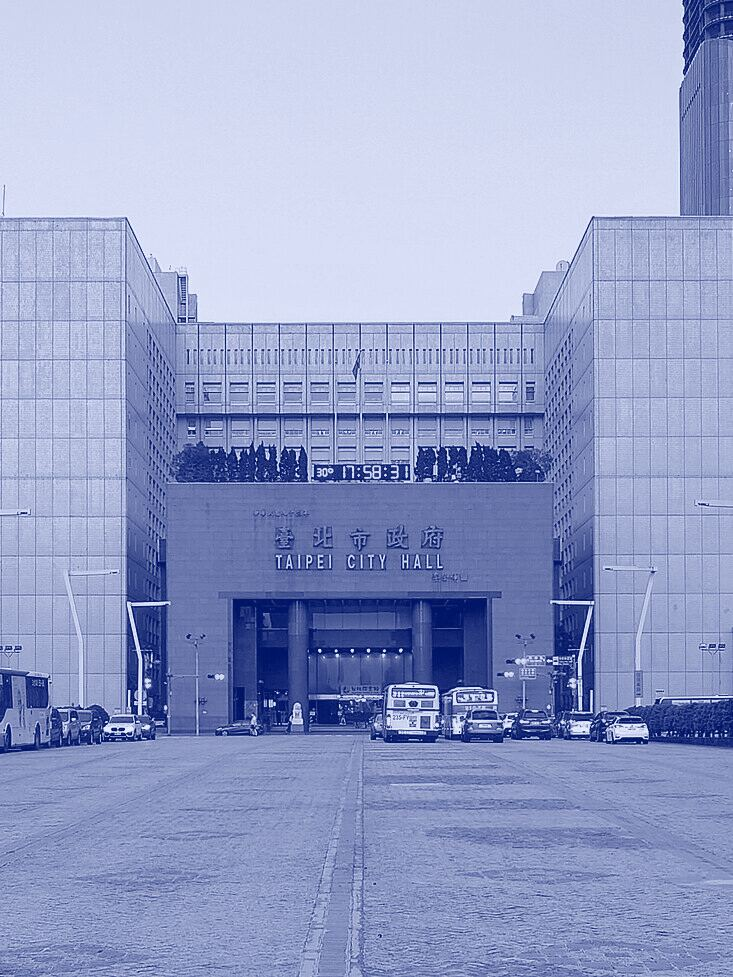
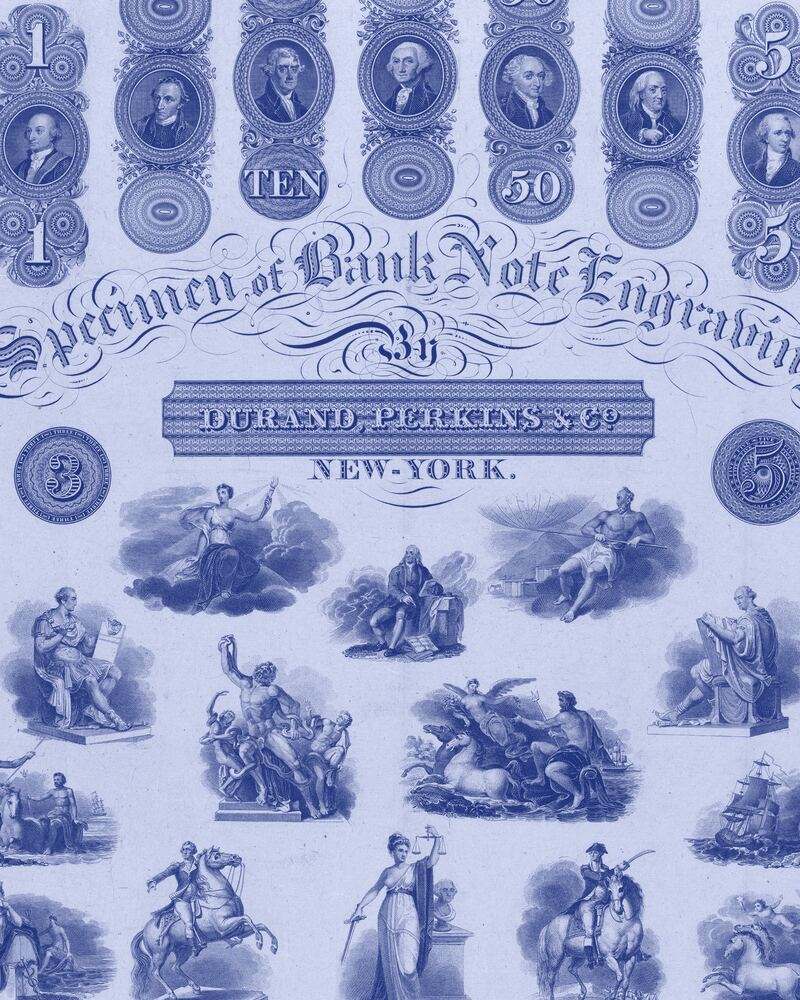
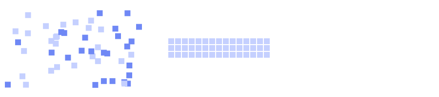
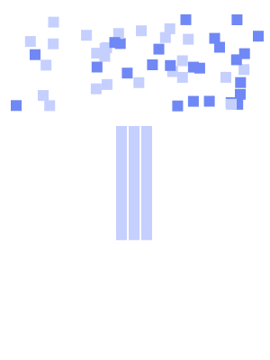

數位轉型（DigiLism）
核心系統與大型主機透過 API 接進來，AI 模型也走同一道 Gateway。
整合 MCP 協定與 AI Gateway 架構，讓 AI 模型安全串接企業 API、資料與業務流程

開放銀行、金融檢查與政府 API 規範的要求，digiRunner 已有對應功能，專案不必從零設計合規架構。
| 金融銀行與保險公司導入 API 管理平台時，開放銀行與金融檢查的要求已經對應好。 | |||
|---|---|---|---|
| 開放銀行 | digiRunner | 金融 | 看金融業方案 |
昕力資訊 digiRunner API 管理平台反應台灣開放銀行金管會法規要求 | |||
| 三階段規範 | digiRunner | 金融 | 看金融業方案 |
昕力資訊實現三階段開放銀行規範 | |||
| 金融檢查 | digiRunner | 金融 | 看金融業方案 |
針對金融檢查，完善 API 管理： API 生命週期作業 訂定交易限制 訂定連線識別名稱產製方式 定期盤點作業及風險評估 進行資源與服務監控作業 完善之服務憑證管理規範 進行分類分級管理 API Key 識別認證 採用 OAuth 2.0 | |||
| 政府與公部門政府單位建置 API 管理平台時，共通性規範與惡意行為防護已經內建。 | |||
| 共通性規範 | digiRunner | 政府 | 看政府方案 |
符合國家發展委員會【共通性應用程式介面規範】。 | |||
| 惡意行為防護 | digiRunner | 政府 | 看政府方案 |
具備惡意行為防護功能，可以識別程式碼注入、跨站台腳本攻擊、SQL 攻擊語法與 XML、JSON 結構語法威脅；並能搭配防毒軟體偵測病毒攻擊。 | |||
| 臺北市政府 | digiRunner | 政府 | 看政府方案 |
為臺北市政府建置符合統一標準的API管理平台，使各機關的異質應用系統資料介接，讓市府推動資料開放政策，拓展創新應用之可行性，極大化開放資料加值應用與民眾參與公共政策。此外，昕力顧問團隊更協助市府建立API管理制度，並輔導各級機關一一導入上線。 | |||
三則案例都是金融保險的日常作業，每一則都有可以引用的成果。
理賠立案到派件
全自動執行理賠立案到派件，精確解析診斷書，節省逾80%人工作業時間
AI 智能理賠解決方案醫療單據建檔
透過免模板辨識醫療單據解決格式變動痛點，提升辨識率並降低40%維護人力
AI 智慧建檔解決方案
跨行詐騙聯防
標準化聯防流程，詐騙事件即時共享，提升跨行交換的效率與透明度
看所有成功案例核心系統與大型主機透過 API 接進來，AI 模型也走同一道 Gateway。
整合 MCP 協定與 AI Gateway 架構，讓 AI 模型安全串接企業 API、資料與業務流程
依場景選擇合適的大語言模型，從智能客服、語音質檢到文件辨識都有產品。
SysTalk.ai 支援主流開源與企業級 LLM（如 70B 模型），企業可依場景選擇最合適的模型
碳盤查、產品碳足跡與 CBAM 申報資料，用同一套平台整理。
利用機器學習模型分析日誌並檢測異常，能快速識別入侵與攻擊
使用者登入不必用密碼，系統日誌裡的入侵與攻擊由機器學習找出來。
FIDO2 無密碼 零信任身分驗證
OrientAI 只部署在企業端，資料的掌控權在企業手上。Agent 的權限、影子 AI 與 Token 用量都有管控；搭配群聯 aiDAPTIV，地端架構離線也能運行。
昕力自己研發產品，也負責導入規劃、模型設定、建置與應用模組設計，決策者不必在產品原廠和導入廠商之間協調。下圖是 SysTalk.ai 的 AI 導入順序。


AI 導入情境分析
解決方案搭配建議
效益評估
模型評估、微調
昕力資訊提供完整的導入規劃、模型設定、建置與應用模組設計服務
昕力資訊創立於 2005 年。2008 年首度跨足金融產業，為華南銀行建置 CRM 系統；2011年開發第一個 產品 – TPRS 推薦系統。之後分別在2017、2019年設立新加坡與越南子公司，2020年以「TPIsoftware」 邁入國際。資安與雲端方面，企業產品中台之開發流程 獲ISO27001 認證，並且正式成為 Google Cloud 合作夥伴。目前的據點是：台北總部 新加坡 越南 日本 新竹專案管理中心 台中專案管理中心 台南開發中心 高雄開發中心。 關於昕力
填寫聯絡表單，說明您的產業、現有系統與想接上的服務，昕力的業務會與您聯絡。回覆時間：待補